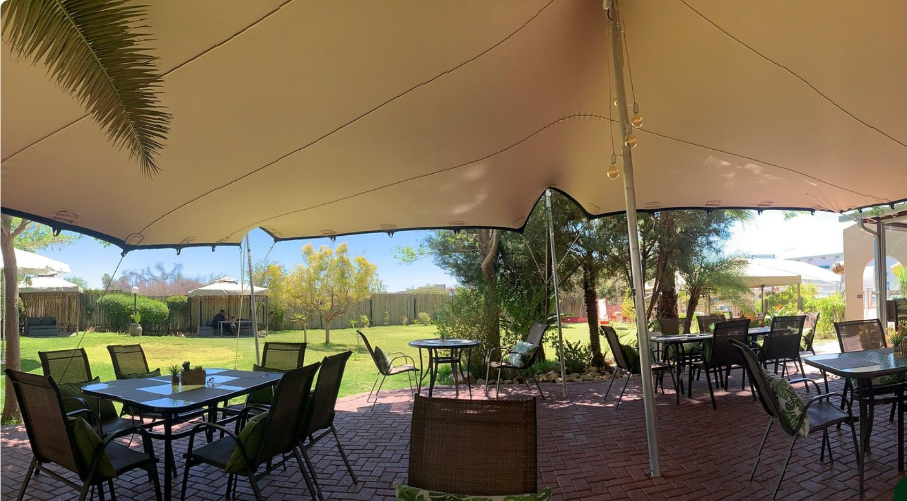
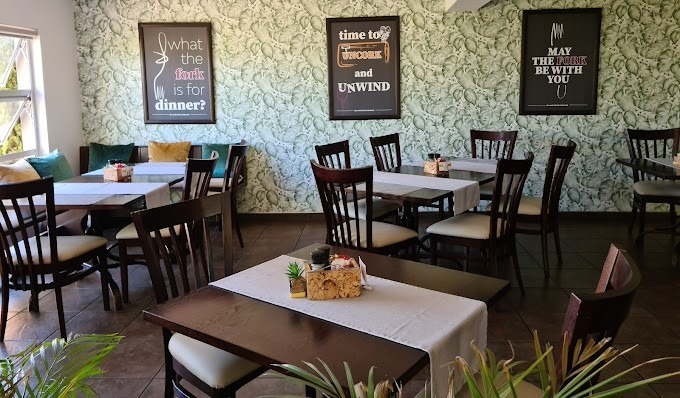
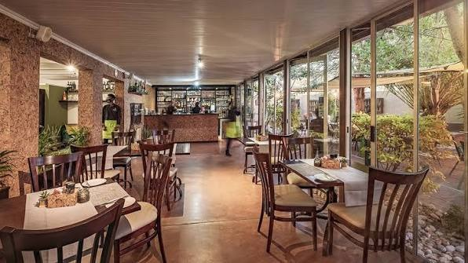
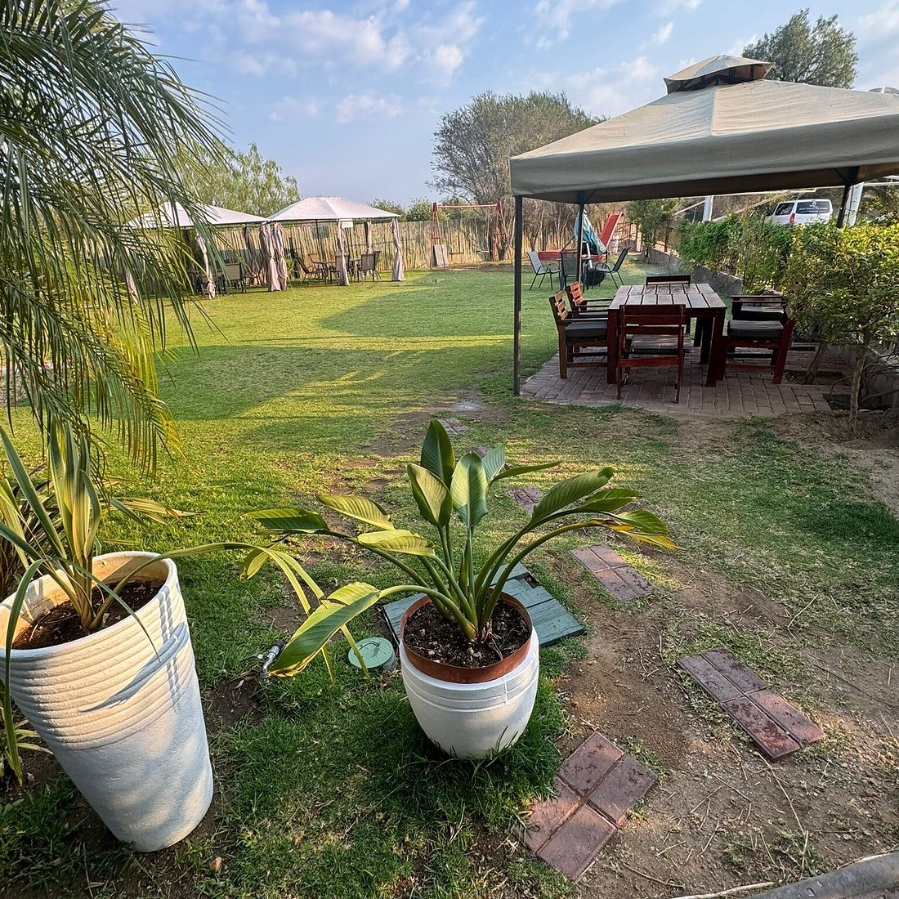

Our story
May the fork be with you
The Cork & Fork started as a simple idea: good local ingredients, a proper wine list, and a room nobody wants to leave. A few hundred puns later, here we are.
We're a casual-contemporary restaurant on Centaurus Street, built around a stretch-tent patio, a full lawn out back, and an indoor room that takes its decor as seriously as its steaks — which is to say, not seriously at all. Corks and forks show up on the walls, on the menu, and in most of our specials copy.
The kitchen leans local: Namibian Kapana-style beef, oryx game loin, and a butcher's block cut to order, alongside the pizza, pasta and burgers everyone actually wants on a Tuesday night. The bar runs a full cocktail list and a rotating wine pairing every month.
Kids are genuinely welcome here — there's a play area on the lawn, and a menu built for smaller appetites. Reviewers keep mentioning the view is peaceful. We'd like to think that's on purpose too.
The space
Stretch tent, garden, and a room full of puns




What people say
“The quirky posters on the wall are really cool. The staff was very helpful.”
Rjr836
“Nice hotel restaurant with tables inside and outside in a nice park. Very friendly and efficient service.”
Gustavo, Buenos Aires
See it for yourself
Centaurus Street, Windhoek · Tue–Sat 7am–10pm, Sun 7am–3pm